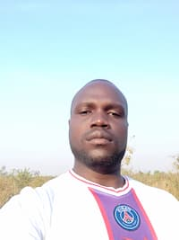

Francis Mwaka | WDD 130

Hello! My name is Francis Mwaka, I am 30 years old and i live in Uganda, Amuru, Atiak. I am a passionate Community Development and Advocacy Professional with over 4 years of experience supporting grassroots initiatives in peacebuilding, GBV prevention, youth engagement, community mobilization, and policy advocacy. I currently serve as Lobby & Advocacy Officer at Regional Associates for Community Initiatives (RACI), where I contribute to advocacy campaigns, stakeholder engagement, and community-driven development programs. My work focuses on equitable land governance, women’s empowerment, social accountability, and inclusive community participation. I am also the Founder and Chairperson of Community Empowerment Network (CEN), a community-based organization committed to strengthening local voices and sustainable development initiatives. Professionally, I have a background in nursing, which has strengthened my ability to work with diverse communities with empathy, professionalism, and care. I have also received training in Basic Nonviolent Communication (NVC), cybersecurity, advocacy, and programming. Recently, I completed the Google Cybersecurity Professional Certificate on Coursera, gaining practical knowledge in cybersecurity operations, threat detection, risk management, security tools, and digital safety practices. I am particularly interested in the intersection of technology, community protection, digital rights, and organizational security. I value collaboration, continuous learning, leadership, and creating meaningful impact through both community engagement and technology-driven solutions.